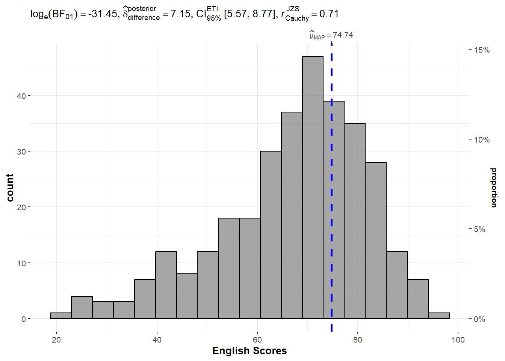
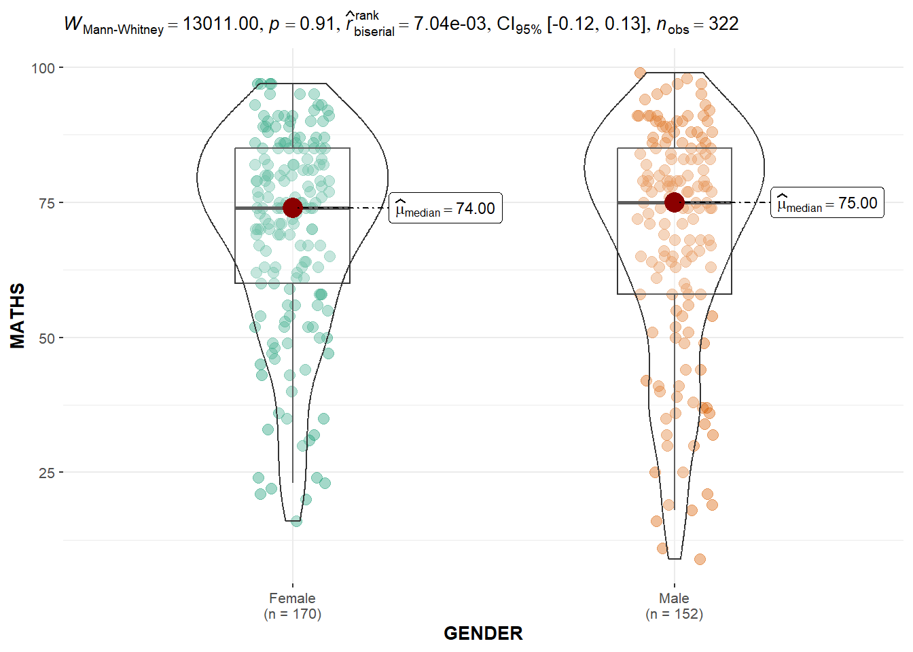
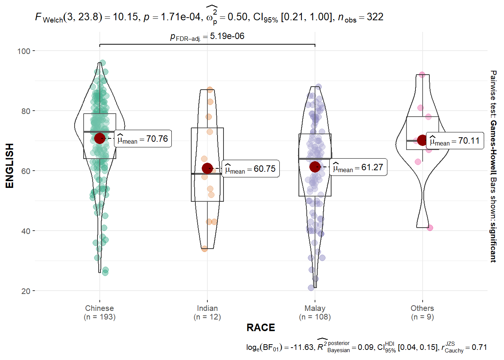
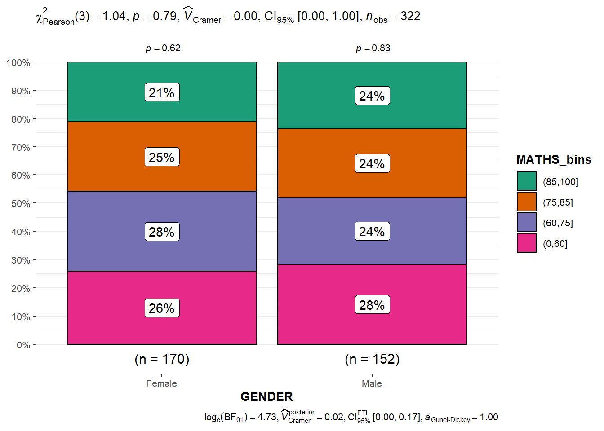
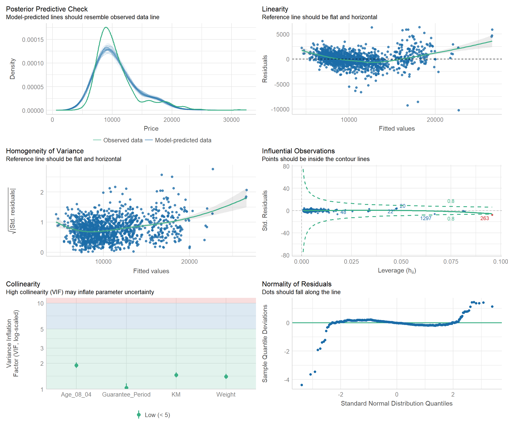

Show the code
pacman::p_load(ggstatsplot, performance, parameters, tidyverse, readxl, see)In this hands-on exercise, we will learn how to:
create visual graphics with rich statistical information using ggstatsplot package
visualise model diagnostics using performance package
visualise model parameters using parameters package.
Before we start, let us ensure that the required R packages have been installed and import the relevant data for this hands-on exercise.
For this exercise, other than tidyverse, we will use the following packages:
ggstatplot: an extension of ggplot2 package for creating graphics with details from statistical tests included in the information-rich plots themselves.
performance: to provide utilities for computing indices of model quality and goodness of fit.
parameters: to provide utilities for processing the parameters of various statistical models
tidyverse: a family of R packages for data science processing
readxl: to import excel files into R
The code chunk below uses p_load() of pacman package to check if the abovementioned packages are installed in the computer. If they are, they will be launched in R. Otherwise, pacman will install the relevant packages before launching them.
pacman::p_load(ggstatsplot, performance, parameters, tidyverse, readxl, see)For this exercise, we will be using the Exam_data.csv provided by the course instructor and we have used it in Hands-on Exercises 1 and 2. It consists of year end examination grades of a cohort of primary 3 students from a local school. It is in csv file format.
We use read_csv() function of readr to import the Exam_data.csv file into R and save it as a tibble data frame called exam_data. Then we will use datatable() of DT to have an overview of the imported data.
exam_data <- read_csv("data/Exam_data.csv")
glimpse(exam_data)Rows: 322
Columns: 7
$ ID <chr> "Student321", "Student305", "Student289", "Student227", "Stude…
$ CLASS <chr> "3I", "3I", "3H", "3F", "3I", "3I", "3I", "3I", "3I", "3H", "3…
$ GENDER <chr> "Male", "Female", "Male", "Male", "Male", "Female", "Male", "M…
$ RACE <chr> "Malay", "Malay", "Chinese", "Chinese", "Malay", "Malay", "Chi…
$ ENGLISH <dbl> 21, 24, 26, 27, 27, 31, 31, 31, 33, 34, 34, 36, 36, 36, 37, 38…
$ MATHS <dbl> 9, 22, 16, 77, 11, 16, 21, 18, 19, 49, 39, 35, 23, 36, 49, 30,…
$ SCIENCE <dbl> 15, 16, 16, 31, 25, 16, 25, 27, 15, 37, 42, 22, 32, 36, 35, 45…In addition, we will be using the ToyotaCorolla.xls for Visualising Models and Parameters. We use read_xls() of readxl package to import the data worksheet of ToyotaCorolla.xls workbook into R.
car_resale <- read_xls("data/ToyotaCorolla.xls",
"data")
glimpse(car_resale)Rows: 1,436
Columns: 38
$ Id <dbl> 81, 1, 2, 3, 4, 5, 6, 7, 8, 44, 45, 46, 47, 49, 51, 6…
$ Model <chr> "TOYOTA Corolla 1.6 5drs 1 4/5-Doors", "TOYOTA Coroll…
$ Price <dbl> 18950, 13500, 13750, 13950, 14950, 13750, 12950, 1690…
$ Age_08_04 <dbl> 25, 23, 23, 24, 26, 30, 32, 27, 30, 27, 22, 23, 27, 2…
$ Mfg_Month <dbl> 8, 10, 10, 9, 7, 3, 1, 6, 3, 6, 11, 10, 6, 11, 11, 11…
$ Mfg_Year <dbl> 2002, 2002, 2002, 2002, 2002, 2002, 2002, 2002, 2002,…
$ KM <dbl> 20019, 46986, 72937, 41711, 48000, 38500, 61000, 9461…
$ Quarterly_Tax <dbl> 100, 210, 210, 210, 210, 210, 210, 210, 210, 234, 234…
$ Weight <dbl> 1180, 1165, 1165, 1165, 1165, 1170, 1170, 1245, 1245,…
$ Guarantee_Period <dbl> 3, 3, 3, 3, 3, 3, 3, 3, 3, 3, 3, 3, 3, 3, 3, 3, 3, 3,…
$ HP_Bin <chr> "100-120", "< 100", "< 100", "< 100", "< 100", "< 100…
$ CC_bin <chr> "1600", ">1600", ">1600", ">1600", ">1600", ">1600", …
$ Doors <dbl> 5, 3, 3, 3, 3, 3, 3, 3, 3, 5, 5, 5, 5, 5, 5, 5, 3, 3,…
$ Gears <dbl> 5, 5, 5, 5, 5, 5, 5, 5, 5, 5, 5, 5, 5, 5, 5, 5, 5, 5,…
$ Cylinders <dbl> 4, 4, 4, 4, 4, 4, 4, 4, 4, 4, 4, 4, 4, 4, 4, 4, 4, 4,…
$ Fuel_Type <chr> "Petrol", "Diesel", "Diesel", "Diesel", "Diesel", "Di…
$ Color <chr> "Blue", "Blue", "Silver", "Blue", "Black", "Black", "…
$ Met_Color <dbl> 1, 1, 1, 1, 0, 0, 0, 1, 1, 0, 0, 0, 1, 1, 1, 1, 1, 1,…
$ Automatic <dbl> 1, 0, 0, 0, 0, 0, 0, 0, 0, 0, 0, 0, 0, 0, 0, 0, 0, 0,…
$ Mfr_Guarantee <dbl> 0, 0, 0, 1, 1, 1, 0, 0, 1, 1, 1, 0, 0, 1, 1, 1, 0, 1,…
$ BOVAG_Guarantee <dbl> 0, 1, 1, 1, 1, 1, 1, 1, 1, 1, 1, 1, 1, 1, 1, 1, 1, 1,…
$ ABS <dbl> 1, 1, 1, 1, 1, 1, 1, 1, 1, 1, 1, 1, 1, 1, 1, 1, 1, 1,…
$ Airbag_1 <dbl> 1, 1, 1, 1, 1, 1, 1, 1, 1, 1, 1, 1, 1, 1, 1, 1, 1, 1,…
$ Airbag_2 <dbl> 1, 1, 1, 1, 1, 1, 1, 1, 1, 1, 1, 1, 1, 1, 1, 1, 1, 1,…
$ Airco <dbl> 1, 0, 1, 0, 0, 1, 1, 1, 1, 1, 1, 1, 1, 1, 1, 1, 1, 1,…
$ Automatic_airco <dbl> 1, 0, 0, 0, 0, 0, 0, 0, 0, 0, 0, 1, 0, 0, 0, 1, 0, 1,…
$ Boardcomputer <dbl> 0, 1, 1, 1, 1, 1, 1, 1, 1, 1, 1, 1, 1, 1, 1, 1, 1, 1,…
$ CD_Player <dbl> 1, 0, 1, 0, 0, 0, 0, 0, 1, 0, 0, 0, 1, 0, 1, 1, 1, 1,…
$ Central_Lock <dbl> 1, 1, 1, 0, 0, 1, 1, 1, 1, 1, 1, 1, 1, 1, 1, 1, 1, 1,…
$ Powered_Windows <dbl> 1, 1, 0, 0, 0, 1, 1, 1, 1, 1, 1, 1, 1, 1, 1, 1, 1, 1,…
$ Power_Steering <dbl> 1, 1, 1, 1, 1, 1, 1, 1, 1, 1, 1, 1, 1, 1, 1, 1, 1, 1,…
$ Radio <dbl> 0, 0, 0, 0, 0, 0, 0, 0, 0, 0, 0, 0, 0, 0, 0, 0, 0, 0,…
$ Mistlamps <dbl> 0, 0, 0, 0, 0, 1, 1, 0, 0, 0, 0, 0, 0, 0, 0, 0, 0, 0,…
$ Sport_Model <dbl> 0, 0, 0, 0, 0, 0, 0, 1, 0, 1, 1, 0, 1, 1, 1, 1, 1, 1,…
$ Backseat_Divider <dbl> 0, 1, 1, 1, 1, 1, 1, 1, 1, 1, 1, 1, 1, 1, 1, 1, 1, 1,…
$ Metallic_Rim <dbl> 0, 0, 0, 0, 0, 0, 0, 0, 0, 0, 0, 0, 0, 0, 0, 0, 0, 0,…
$ Radio_cassette <dbl> 0, 0, 0, 0, 0, 0, 0, 0, 0, 0, 0, 0, 0, 0, 0, 0, 0, 0,…
$ Tow_Bar <dbl> 0, 0, 0, 0, 0, 0, 0, 0, 0, 0, 0, 0, 0, 0, 0, 0, 0, 0,…We can use gghistostats() to build an visual of one-sample test on English Scores.
set.seed(2024)
gghistostats(data = exam_data, x = ENGLISH,
type = "bayes",
test.value = 60,
xlab= "English Scores")
The default information presented are:
Statistical details
Bayes Factor
Sample Sizes
Distribution Summary
A Bayes factor is the ratio of the likelihood of one particular hypothesis to the likelihood of another. It can be interpreted as a measure of the strength of evidence in favor of one theory among two competing theories.
Bayes factor gives us a way to evaluate the data in favor of a null hypothesis, and to use external information to do so. It tells us what the weight of the evidence is in favor of a given hypothesis.
When we are comparing two hypotheses, H1 (the alternate hypothesis) and H0 (the null hypothesis), the Bayes Factor is often written as B10.
The Schwarz criterion is one of the easiest ways to calculate rough approximation of the Bayes Factor.
A Bayes Factor can be any positive number (i.e., 0 and ∞).
1 indicates the data do not favor either theory more than the other;
values greater than 1 indicate increasing evidence for one theory over the other (e.g., the alternative over a null hypothesis) ; and
values less than 1 the converse (e.g., increasing evidence for the null over the alternative hypothesis).
Thus, Bayes factors allow three different types of conclusions:
There is strong evidence for the alternative (B much greater than 1);
there is strong evidence for the null (B close to 0); and
the evidence is insensitive (B close to 1).
We can use ggbetweenstats() to build an visual of two sample means test of math scores by gender.
ggbetweenstats(data = exam_data, x = GENDER,
y = MATHS, type = "np",
messages = FALSE)
The default information presented are:
Statistical details
Bayes Factor
Sample Sizes
Distribution Summary
We can use ggbetweenstats() to build a visual for one-way ANOVA test on English Score by race.
ggbetweenstats(
data = exam_data, x = RACE, y = ENGLISH,
type = "p", mean.ci = TRUE,
pairwise_comparisons = TRUE,
pairwise.display = "s",
p.adjust.method = "fdr",
messages = FALSE)
Try: explore the aov object!
We can use ggscatterstats() to build a visual for significant test of correlation between Math Scores and English Scores.
ggscatterstats(data = exam_data,
x = MATHS,
y = ENGLISH,
marginal = FALSE)
We can use ggbarstats() to build a visual for significant test of association.
For our data, we will first bin the Math scores into a 4-class variable using cut()
exam1 <- exam_data %>%
mutate(MATHS_bins = cut(MATHS, breaks = c(0, 60,75,85,100)))Then we will build the visual using ggbarstats().
ggbarstats(exam1, x = MATHS_bins,
y = GENDER)
The following code chunk is used to calibrate a multiple linear regression model using lm() of Base Stats of R.
model <- lm(Price ~ Age_08_04 + Mfg_Year + KM +
Weight + Guarantee_Period, data = car_resale)
model
Call:
lm(formula = Price ~ Age_08_04 + Mfg_Year + KM + Weight + Guarantee_Period,
data = car_resale)
Coefficients:
(Intercept) Age_08_04 Mfg_Year KM
-2.637e+06 -1.409e+01 1.315e+03 -2.323e-02
Weight Guarantee_Period
1.903e+01 2.770e+01 We check for multicolinearity using check_collinearity() function of performance package.
check_collinearity(model)# Check for Multicollinearity
Low Correlation
Term VIF VIF 95% CI Increased SE Tolerance Tolerance 95% CI
KM 1.46 [ 1.37, 1.57] 1.21 0.68 [0.64, 0.73]
Weight 1.41 [ 1.32, 1.51] 1.19 0.71 [0.66, 0.76]
Guarantee_Period 1.04 [ 1.01, 1.17] 1.02 0.97 [0.86, 0.99]
High Correlation
Term VIF VIF 95% CI Increased SE Tolerance Tolerance 95% CI
Age_08_04 31.07 [28.08, 34.38] 5.57 0.03 [0.03, 0.04]
Mfg_Year 31.16 [28.16, 34.48] 5.58 0.03 [0.03, 0.04]check_c <- check_collinearity(model)
plot(check_c)
We use check_normality() of performance package to check if the model follows the normality assumption.
model1 <- lm(Price ~ Age_08_04 + KM +
Weight + Guarantee_Period, data = car_resale)
check_n <- check_normality(model1)
plot(check_n)
We check for homogeneity of Variances using check_heterscedasticity of performance package.
check_h <- check_heteroscedasticity(model1)
plot(check_h)
We can also perform the complete by using check_model().
check_model(model1)
We can use two methods to visualise regression parameters: (i) see method and (ii) ggcoefstats() method.
plot(parameters(model1))
ggcoefstats(model1,
output = "plot")